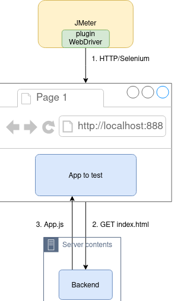

class: center, middle # Benchmark React/Vuejs --- # Agenda 1. Objectif 2. Architecture 2. Jmeter 3. Selenium 4. Web Vitals 5. Demo 6. Et ensuite ? --- # Objectif * mesurer les écarts de performance d'un client web * ajouter un outil à notre boite à outils * faire un choix entre 2 frameworks JS (vuejs et react) --- class: center, middle # Architecture  --- <img src="https://jmeter.apache.org/images/logo.svg"/> * injecteur écrit en java (déployable sur plusieurs noeuds) * UX un peu "brut" * dernière version plus design mais des concepts à découvrir * plein de plugins dont [WebDriver](https://jmeter-plugins.org/wiki/WebDriverTutorial/) cf https://jmeter.apache.org/ --- <img src="https://www.selenium.dev/images/selenium_logo_large.png" width="300px"/> * suite d'outils de test d'app Web * usage principal : tests d'acceptance (boite noire à partir du navigateur) * WebDriver permet de piloter un navigateur (FF, Chrome, ...) cf https://www.selenium.dev/ --- # Web Vitals *mesure ce qui se passe dans le navigateur (rendu, délais avant interractions...)* <img src="https://webdev.imgix.net/vitals/lcp_ux.svg" width="200px"/> <img src="https://webdev.imgix.net/vitals/fid_ux.svg" width="200px"/> <img src="https://webdev.imgix.net/vitals/cls_ux.svg" width="200px"/> see https://web.dev/vitals/ --- class: center, middle # Demo --- # Et ensuite ? * faire un/des article(s) expliquant notre démarche/avoir des retours * autres critères de comparaison: * compatibilité avec "vieux" navigateur/mobile * taille livrables * nombre lignes de code * "industrialiser" l'utilisation